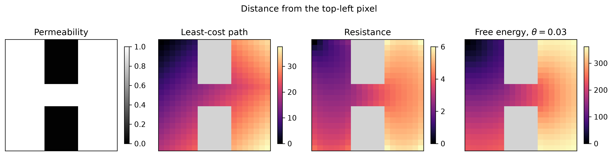

Getting started
Generated by make_logo.py.
JAXScape is a minimal JAX library for connectivity modelling at scale. It provides the building blocks of a connectivity analysis workflow:
- differentiable and GPU-accelerated distances on graphs
- differentiable raster-to-graph and graph-to-raster mappings
- moving-window utilities for connectivity analyses of large rasters
JAXScape runs on CPUs, GPUs and TPUs through JAX. Its computations are differentiable, for sensitivity analysis and optimization, and it implements its own linear solvers and differentiation rules where JAX provides none.
Why JAXScape?¤
The table marks the quantities that each package computes.
| Package | Distance on a graph: least-cost path | Distance on a graph: resistance | Distance on a graph: free energy | Connected habitat | Movement corridors and pinch points |
|---|---|---|---|---|---|
| JAXScape | ✓ | ✓ | ✓ | ✓ | ✓ |
| Circuitscape.jl | ✓ | ✓ | |||
| Omniscape.jl | ✓ | ||||
| gdistance | ✓ | ✓ | ✓ | ||
| ConScape.jl | ✓ | ✓ | ✓ | ✓ | |
| skimage.graph.MCP | ✓ | ||||
| Graphab | ✓ | ✓ | ✓ | ✓ | |
| Conefor | ✓ | ||||
| eco-connectivity | ✓ | ||||
| EcoScape | ✓ | ||||
| samc | ✓ | ||||
| Smallest speed-up of JAXScape over another package | 1.2x over skimage.graph.MCP | 24x over Circuitscape.jl | 2.2x over ConScape.jl | 0.57x over Graphab (on habitat patches) | 5.2x over Omniscape.jl |
Speed-up: the smallest speed-up of JAXScape on one GPU over another package in the benchmark of JAXScape 0.0.16, that is, the warm runtime of the package divided by that of JAXScape, each in its fastest setting on the largest synthetic raster that both completed, with JAXScape under the distance or setting with which the benchmark compares the package. The benchmark page of the documentation details the comparison.
ilg-toolkit builds on JAXScape for inverse landscape genetics, the inference of landscape permeability from geolocated molecular data. It works with the JAX scientific machine learning ecosystem, including Equinox and Flax, whose layers can be used to build neural networks that map landscape features to permeability. ResistanceGA (genetic algorithm) and radish (gradient-based optimization) address the same problem.
Installation¤
uv add jaxscape
The default installation is CPU-only. For NVIDIA GPUs, use uv add 'jaxscape[cuda]', or install JAX following the official JAX installation guide. JAXScape will automatically use the JAX backend you have configured.
Least-cost path and resistance distances on rasters work with the default installation. Free-energy distances on large rasters, and resistance or free-energy distances on large graphs that are not rasters, such as networks of habitat patches, need an optional linear solver. See Linear solvers.
Quick start¤
1. Download sample data
curl -sL https://github.com/vboussange/jaxscape/releases/download/v0.0.6/data.zip -o data.zip && unzip -q data.zip && rm data.zip
2. Run the analysis
import jax.numpy as jnp
import matplotlib.pyplot as plt
import numpy as np
from jaxscape import FreeEnergyDistance, GridGraph, LCPDistance, ResistanceDistance
permeability = jnp.array(
np.loadtxt("data/permeability.csv", delimiter=","), dtype=jnp.float32
) + 0.01
barriers = np.asarray(permeability <= 0.1)
# Symmetric conductances are the mean permeability of neighbouring cells.
grid = GridGraph(grid=permeability, fun=lambda x, y: (x + y) / 2)
# Compute distances from the top-left pixel to every other pixel.
source = grid.coord_to_index(jnp.array([0]), jnp.array([0]))
distances = {
"Least-cost path": LCPDistance()(grid, sources=source),
"Resistance": ResistanceDistance()(grid, sources=source),
r"Free energy, $\theta = 0.03$": FreeEnergyDistance(theta=0.03)(grid, sources=source),
}
distance_cmap = plt.cm.magma.copy()
distance_cmap.set_bad(color="lightgray")
fig, axs = plt.subplots(1, 4, figsize=(12, 3.3))
permeability_im = axs[0].imshow(permeability, cmap="gray", vmin=0, vmax=1)
axs[0].set_xticks([])
axs[0].set_yticks([])
for spine in axs[0].spines.values():
spine.set_visible(True)
axs[0].set_title("Permeability")
fig.colorbar(permeability_im, ax=axs[0], shrink=0.2)
for ax, (title, dist_to_node) in zip(axs[1:], distances.items()):
# Convert from node values to a 2D array and hide barrier cells
dist_array = np.asarray(grid.node_values_to_array(dist_to_node.ravel()))
dist_array = np.ma.masked_where(barriers, dist_array)
# Plotting
im = ax.imshow(dist_array, cmap=distance_cmap)
ax.axis("off")
ax.set_title(title)
fig.colorbar(im, ax=ax, shrink=0.2)
fig.suptitle("Distance from the top-left pixel")
plt.tight_layout()
plt.show()
theta is the inverse temperature of the free-energy distance: larger values
bring it closer to the least-cost path distance. For other graphs and larger
landscapes, see Linear solvers
for the choice of solver.

These distances are differentiable: jax.grad of a scalar function of them,
such as their mean, gives its derivative with respect to the permeability of
every pixel. The
distance calculation example
maps this derivative.
Contributing¤
See CONTRIBUTING.md.
Benchmarking¤
JAXScape includes a benchmark workspace that profiles JAXScape's own
implementations and compares them with other landscape connectivity software.
The benchmark page of the
documentation describes the questions and publishes the results. To reproduce the
benchmark or run it on your own CPU or GPU, follow the instructions in
benchmark/README.md.
License¤
jaxscape is distributed under the terms of the MIT license.
Citation¤
If you use JAXScape in your research, please cite:
@software{jaxscape2024,
author = {Boussange, Victor},
title = {JAXScape: A minimal JAX library for connectivity modelling at scale},
year = {2025},
doi = {10.5281/zenodo.15267703},
url = {https://github.com/vboussange/jaxscape}
}
Acknowledgements¤
Development of JAXScape was supported by the Swiss National Science Foundation (SNSF), grant 237783.